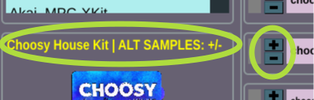

Drumlabooh is aimed to not interfere with the creativity. All that you need is to create a new MIDI track at your DAW, select the drumkit from the list, and play. Drumlabooh uses the existing, sampled drumkits or the samples from the sample packs.
1. Stereo vs Multi-channel modes2.0 Kits
2.1 Hydrogen Kits
2.2 SFZ Kits
2.3 Drumlabooh kits
2.4 Drumlabooh Alternate Samples Kits
2.5 Quick Custom Kits
3. Mixer
4. Options
5. Multi-channel explained
5.1 Ardour
5.2 Reaper
1. Stereo vs Multi-channel modes
The first thing that you need to know that there are two versions of Drumlabooh - Stereo and Multi (Multi-channel or Multi-outputs). The last one gives you the separated output mono channel for each instrument from the drum kit, so 36 channels at all. To use the Stereo version, add to track Drumlabooh plugin. And for Multi-channel version, add Drumlabooh-multi.
At Multi-channel version, the plugin's pan, volume and mute controls are disabled, because you can control them via tracks or buses in DAW. Read the DETAILS how to use Multi-mode in DAW, how to attach each drum to the individual track or the bus.
2.0 Kits
Drumlabooh at start scans all kits and shows the list with them to select. Also, you can press Open button below the kit info section, to select the drumkit file manually from any location. Select xml (Hydrogen formet), sfz (SFZ) or drumkit.txt (Drumlabooh format) file at the drumkit's folder.
Important note: when loading the drumkit, Drumlabooh converts the samples in the memory with the DAW's session samplerate. So the large kit can be loaded slowly if the samples are, for example, at 48 kHz, but session's rate is 44.1. The same with the FLAC-compressed samples. If you try to load such large drumkit, please wait, don't think that the plugin or DAW is frozen.
The best way to deal with it - use Adapt button, that saves the copy of current drumkit with the session's samplerate, and 32 bit float data format (24 bit for FLAC), at drum_sklad directory. Then, this copy will be used as the current drumkit. The next time the copy will be loaded faster than the original kit.
This function works with Drumlabooh kit format only, and with samples WAV, AIFF and FLAC.
Let's talk about how Drumlabooh supports drum kit formats.
2.1 Hydrogen drum kits
At start, Drumlabooh searches all installed Hydrogen drum machine kits at their proper places. Dozens cool kits are created for Hydrogen, but to install them you need to run Hydrogen, and there go to Drumkits - Online import menu, where you can select and download kits from Hydrogen or Musical Artifacts repositories.
Some of Hydrogen kits may be already installed at your Linux. Currently, for Linux and Windows, the best way to get new Hydrogen kits is Online import feature, because you simple cannot find public download links.
2.2 SFZ drum kits
Drumlabooh scans installed SFZ kits at pre-defined locations: $HOME/sfz-kits (Linux), c:\sfz-kits and d:\sfz-kits (Windows). SFZ kit directories must be placed there to be available for Drumlabooh.
The kits of excellent quiality - AVL Drumkits - you can download in SFZ format from AVLDrumkits_SFZ. A lot of big SFZ's you can download from here.
Drumlabooh supports limited SFZ opcodes and parameters set: group, region, key, sample, default_path, offset, lovel, hivel. Drumlabooh does not support sample file names with the spaces (because it is obscure to parse them from SFZ file)
2.3 Drumlabooh drum kits
The own kit format of Dramlabooh. One kit = one directory, placed to $HOME/drumlabooh-kits, $HOME/drum_sklad or /usr/share/drumlabooh-kits on Linux, and, for Windows, to c:\drumlabooh-kits, d:\drumlabooh-kits, c:\drum_sklad or d:\drum_sklad.
Dramlabooh usually automatically installs the kits from its official Drum Sklad on Github repo. Also, there you can read a details about the format, it is quite simple. And, the word "sklad" means "warehouse", "storage", "repository".
Additional kits those are not hosted on Github can be downloaded from Drum Sklad at Telegram. So the full Drumlabooh kits collection is Drum Sklad on Github + Drum Sklad on Telegram.
All natural Drumlabooh kits have built-in, optional General MIDI mapping settings, you can use it at the MIDI map mode , by selecting the Kit value there.
2.4 Drumlabooh Alternate Samples Kits
Some Drumlabooh kits contain several alternative samples for each instrument slot. When you load such kit, it's name is shown by yellow color and the hint:

Also, drum cells will be colored with a special color. For switch samples, use "+" and "-" buttons for each drum cell/slot.
2.5 Quick Custom Kits
Running Drumlabooh you can quickly make you own kit with external one-shot samples, for example from some drum sample pack. Here are the good resources with free stuff - www.reddit.com/r/Drumkits/, www.goldbaby.co.nz/freestuff.html.
Quick kit is the "proxy" and simplified kit, that you can make for yourself just from Drumlabooh. To create such kit, do the following steps:
1. At your DAW project, add Drumlabooh to the track. Now you have empty drum cells/slots.
2. At any cell, you see the two small buttons on the left of the cell name:
3. The upper button shows the file open dialog. Select some sample for this slot. The lower button clears the cell.
4. Add other samples to other slots.
5. Now you can save the quick kit. Double click at kit's name ("EMPTY KIT" caption):

6. Edit the kit name, press Enter to finish.
7. Press Save button:

8. Now your quick kit is saved at drum_sklad directory at your home folder. This kit will be scanned by Drumlabooh as all other kits.
The quick kit's folder doesn't hold samples. Quick kit config file keeps absolute paths to samples. The sample files are stays in their folders. But if you want to create the "bundle", press Adapt button to create the copy of quick kit, and then use that copy.
You can load the quick kit as the normal kit, and can edit it, just don't forget to Save it. The "bundled" quick kit is also editable, but newly added samples will be added as file paths and not copied to the kit's folder.
Supported sample formats
Drumlabooh supports the samples in the following formats: WAV, AIFF, FLAC, OGG, MP3. OGG and MP3 cannot be adapted. Stereo samples will be readed as mono (left channel used), because pre-panned (from the kit) drums make internal mixing just weird.
Full directories list, where Drumalbooh searches for the kits
Drumlabooh/Drumrox format:
/usr/share/drumrox-kits /usr/share/drumlabooh-kits $HOME/drumrox-kits $HOME/drumlabooh-kits $HOME/drum_sklad //main dir for locally installed kits C:\drumlabooh-kits D:\drumlabooh-kits C:\drum_sklad
Hydrogen format:
/usr/share/hydrogen/data/drumkits /usr/local/share/hydrogen/data/drumkits /usr/share/drmr/drumkits $HOME/.hydrogen/data/drumkits $HOME/.drmr/drumkits
SFZ format:
$HOME/sfz-kits C:\sfz-kits D:\sfz-kits
3. Built-in mixer
At the right from the drumkits list you see 36 cells (or slots) for loaded samples. Here the layout of each cell:

1 Led - lights when note plays.
2 Instrument name - defined at the kit, otherwise the file name is used.
3 FX - button to call FX window for this instrument. You can close window by "close" button or Escape key. All effects in that window can be turned on and off, so they works only when enabled.
There are LP (Low pass filter, allow the frequences only below the cutoff value), HP (High pass filter, allow the frequences only upper the cutoff value). To simplify the code and performance, the cutoff parameter value is not it HZ, but in floating point number within the range 0..1.
Both filters are resonance filters and have the resonance parameter. Play with the sliders to make new interesting sounds. HP filter is best for hihats, LP for the kick, HP or LP can make cool effect with the snare. If you feel that your sample sounds weak and thin, try the Analog slider to add some warmness.
Note: at Ardour, when FX window becomes active, the plugin window hides, and when you close FX window, you will see the plugin window again. At Reaper and Muse both windows are visible as intended.
4 Pan control - values from 0 (full left) to 1 (full right), 0.5 is a middle. See the Pan mode option to know the algorhytm of the paning. It is important that different DAWs have different pan modes the mixing, sometimes DAW give you an option to select that. Dramlabooh internally acts like the DAW mixer and provides such flexibility too.
5. Volume slider - non-linear, values from -96 to +6 dB.
6. Mute switch - mutes the instrument.
Under the Options you will find the "global" Analog switch and slider, it affects the whole mix at the end of the signal chain. Good for live but quiet drums.
4. Options section
At the lower part of the plugin window you see Options.
MIDI map mode - there are two modes, Auto and Kit. With Auto, Drumlabooh assigns MIDI notes to samples starting from the numerical value of another option, Base MIDI note (default: 36), means at which MIDI note number we map the first instrument at the kit. MIDI note 36 = C at 2-nd octave. Such mode is default and good for the playing from MIDI keyboard. When Kit is selected, Drumlabooh uses MIDI note assignements from the drumkit file, usually it is General MIDI mapping that compatible with e-drums and drum pads. It is also the proper mode for Ardour's drum grooves.
So, MIDI mapping is MIDI note numbers assigned for the drum instruments (Drumlabooh cells) from the kit. The mapping data is included at many Drumlabooh and SFZ kits. But, some drums or percussions are not covered by General MIDI, so in these cases Auto mode is more useful and give you the access to all instruments of the kit.
To more complex MIDI mapping, use the power of you DAW, e-drum/pads options or plugins such as, at Reaper, "JS MIDI map to key v2" - just put it before the Drumlabooh and create/select mapping file, for example:
A3 -> E5 C4 -> C5
Ignore MIDI velocity - play samples at full level. Plain and loud.
Pan mode - allows to select the pan mode for Drumlabooh's internal mixer. See the article. Defaul panner is qual power panning, law: -3 dB (sin/cos taper).
By the way, the pan mode is the significant factor of how DAW "sounds". The pan mode, and/or panning law, is the algorithm that controls the total acoustic power output of two channels, making their level lower when paning position moves to the center. Otherwise, we have louder sound at the center, bacause two channels will play at the full power, and will be louder than the same mono sound. So, any stereo output must be reduced on some degree, when the pan position approaching to the center, to prevent the loudness increase.
Maybe it's better to set the pan mode at Drumlabooh the same to your DAW's pan mode, to make all drum samples paned in the same way. Try what is best sounds in your mix.
Analog- the global saturation on/off and the level of that. Good for quiet drum kits.
5. Multi-channel explained
At Multi-channel version, the plugin's pan, volume and mute controls are disabled, because you can control them via tracks or buses in DAW.
Drumlabooh provides 36 output mono channels, one per sample of the drumkit.
5.1 How to use Multi-out with Ardour?
1. Create MIDI track with Drumlabooh-muiti as the instrument.
2. Load the drumkit into Drumlabooh-multi. For example, Ludwig Sixties. It has 19 instruments inside. Thus, we need just 19 output channels from the 36 available.
3. By default, Drumlabooh-multi sounds as the stereo-output. We don't need that. Let's create the individual channels or the buses for each drum/precussion sample.
4. Right click on the top of the channel strip and select Fan out to tracks or Fan out to buses. Now you have one track or bus per channel to control each of 36 drumkit channels. Please note that these tracks and buses are mono, so to use stereo FX on them, do the right click on the effect, select Pin connection and connect pins to make stereo:

5. All new tracks/channels are in the group now. To make them properly being muted, soloed, etc, do the right click at the group header, and select Remove group:

6. Now, remove unneeded tracks (for example, the kit has only 8 instruments, but you have 36 tracks from Drumlabooh!)
5.2 How to use Multi-out with Reaper?
1. Insert - Virtual Instrument on track, add Drumlabooh-multi (LV2i or VST3i).
2. Confirm at Build routing confirmation window.
3. Voila!
Драмлабух старается не мешать творчеству. Всё что вам нужно, дабы создать с его помощью партию ударных, это создать новую MIDI-дорожку в вашей любимой программе звукозаписи, затем выбрать в Драмлабухе один из установленных драмкитов, или накидать сэмплов из папок, и начать играть с клавиатуры, дрампадов или прописывать квадратики в секвенсере.
1. Стерео и Многоканальный режимы2.0 Драмкиты
2.1 Киты Hydrogen
2.2 Киты SFZ
2.3 Киты Drumlabooh
2.4 Киты с альтернативными сэмплами
2.5 Быстрые самодельные киты
3. Встроенный микшер
4. Настройки
5. О многоканальном режиме подобно
5.1 В Ardour
5.2 В Reaper
1. Стерео и Многоканальный режимы
Драмлабух идет в двух версиях плагина - стерео (называется просто Drumlabooh) и многоканальной (Drumlabooh-stereo). Последняя выводит каждый инструмент из драм-кита в свой отдельный моно-канал, всего их может быть 36. Чтобы использовать стерео-версию, надо подключить к дорожке Drumlabooh, а для многоканальной - Drumlabooh-multi.
В стерео-версии микширование (уровень, панорама, кнопка mute) происходит на уровне плагина. В многоканальной всё это в плагине излишне и возложено на вашу программу звукозаписи, в микшере которой вы и будете управлять вышеперечисленным.
Читайте ПОДРОБНОСТИ об использовании многокального режима - как подключать инструменты драмкита к разным дорожкам или шинам.
2.0 Драмкиты
При запуске Драмлабух сканирует в нужных папках драмкиты всех известных ему форматов и предлагает вам список, откуда киты можно выбирать. Под списком и картинкой кита (если такая есть) находится кнопочка Open, через нее можно открыть драмкит, лежащий вне папок, где ищет Драмлабух. Через диалоговое окно надо выбрать файл xml (для формата Hydrogen ), sfz (для SFZ) или, в случае с форматом Drumlabooh, drumkit.txt.Важное замечание! Загружая драмкит, Драмлабух преобразует его сэмплы, в памяти, к частоте оцифровки текущей сессии DAW, что при большом драмките может затормозить загрузку и даже создать ощущение зависона. Например, сэмплы в драмките имеют частоту 44.1, а частота сессии 48 килогерц. Просто подождите. Но если не хотите ждать каждый раз, нажмите кнопку Adapt под списком драмкитов. Она сохранит копию текущего драмкита в папку drum_sklad, и у этой копии сэмплы будут с частотой текущей сессии, кроме того данные преобразуются в 32 bit float (24 integer для FLAC) моно. Копия автоматически установится как текущий драмкит. При этом поддерживаются, для такого клонирования, только киты в формате Драмлабух с сэмплами в форматах WAV, AIFF и FLAC.
Давайте обсудим, какие вообще форматы китов поддерживаются.
2.1 Драмкиты в формате Hydrogen
При запуске, Drumlabooh сканирует все установленные киты от драм машины Hydrogen, которая выпускается для Linux и Windows. Под Hydrogen существуют десятки драмкитов, но чтобы установить их, надо запустить сам Hydrogen и пойти в нем в меню Драмкиты - Online import, откуда можно скачать киты из двух хранилищ -Hydrogen и Musical Artifacts.
В Линуксе при установке самого Hydrogen скорее всего установятся и некоторые киты. На сегодня, под все системы, самый быстрый способ скачать дополнительные киты для Hydrogen, это его вышеописанная функцияOnline import, ибо публичных ссылок на отдельные киты из хранилищ вы не найдете.
2.2 Драмкиты в формате SFZ
Драмлабух сканирует установленные SFZ-киты в $HOME/sfz-kits (под Linux), а также в c:\sfz-kits и d:\sfz-kits (под Windows). Как обычно, папки с SFZ китами надо поместить туда, чтобы Драмлабух их увидел.
Драмлабух в формате SFZ поддерживает MIDI mapping, заданный параметрами key. Для использования такого мэппинга, установите в Драмлабухе опцию MIDI map mode равной "Kit". Иначе же, в режиме "Auto", мэппинг будет в виде последовательной нумерации, начиная, по умолчанию, с миди-ноты 36 для бас-бочки, первого сэмпла по счету в ките. Однако первую ноту можно изменить в опции Base MIDI Note.
Драмкиты превосходного качества - AVL Drumkits - вы можете скачать в формате SFZ по ссылке http://www.bandshed.net/sounds/AVLDrumkits_SFZ. Также большие SFZ-киты можно скачать тут.
Drumlabooh поддерживает огранииченный набор опкодов и параметров SFZ: group, region, key, sample, default_path, offset, lovel, hivel. Drumlabooh не поддерживает для сэмплов в SFZ файлы с именами, содержащими пробелы.
2.3 Киты в формате Драмлабуха
Киты в формате Драмлабуха. Один кит = одна папка, помещенная в $HOME/drumlabooh-kits, /usr/share/drumlabooh-kits, $HOME/drum_sklad (в Линукс), либо, для Windows, в c:\drumlabooh-kits, d:\drumlabooh-kits, c:\drum_sklad или d:\drum_sklad.
При установке самого Драмлабуха в комплекте с ним идут киты из официального хранилища Drum Sklad on Github. Там же вы можете узнать подробности о формате.
Дополнительные киты, которых нет на Гитхабе, качайте с Drum Sklad в Телеге. Так что полная коллекция китов для Драмлабуха лежит на Гитхабе ПЛЮС в Телеге.
Все киты формата Драмлабух имеют опциональный, заданный в ките, MIDI-mapping стандарта General MIDI, который можно выбрать в Драмлабухе в опции MIDI map mode, где в выпадающем списке надо выбрать "Kit". В противном случае ("Auto") Драмлабух будет осущесвлять mapping по принципу нумерации миди-нот начиная, по умолчанию, с 36 для бас бочки (меняется в опции MIDI base note).
2.4 Киты с альтернативными сэмплами
Некоторые киты Лабуха содержат варианты сэмплов для каждого слота/инструмента. Когда загружается такой кит, его название пишется желтым и дается подсказка, что для переключения вариантов сэмплов надо нажимать кнопки плюс и минус рядом со слотом. Вот на картинке я отметил:
2.4 Быстрые самодельные киты
Не китами едиными жив человек, в сети доступно много паков с сэмплами, например есть вот такие ресурсы - www.reddit.com/r/Drumkits и www.goldbaby.co.nz/freestuff.html. Как же загрузить отдельные сэмплы в Лабуха? Неужели создавать традиционный драмкит? Нет. На сцену выходят Быстрые киты!
Быстрый кит не хранит в себе сами файлы сэмплов, а лишь запоминает пути к ним. Чтобы создать быстрый кит, надо:
1. Добавьте нового Драмлабуха на дорожку. Должен быть "пустой" плагин без загруженного кита. Все ячейки пустые.
2. У каждой ячейки есть, слева от названия слота, две кнопочки одна над другой:
3. Нажатие на верхнюю открывает диалог выбора файла с сэмплом. Он будет загружен в этот слот. Нижняя кнопка выгружает сэмпл и очищает слот.
4. Добавьте еще какие-то сэмплы в слоты.
5. Теперь дадим вашему киту имя. Дважды щелкните мышью на надписи с именем кита, сейчас там написано "EMPTY KIT":
6. Введите имя кита, нажмите Enter.
7. Теперь нажмите кнопку Save:
8. Ваш быстрый кит сохранится в папке drum_sklad внутри домашнего каталога. Этот кит будет сканироваться Лабухом как обычные киты и доступен из списка. Также он автоматически становится, после сохранения, текущим китом в плагине.
Напомню - быстрые киты не хранят в своих папках файлы, хранятся лишь абсолютные пути к ним. Если вы хотите сделать из быстрого кита обычный портабельный кит с сэмплами внутри папки, то нажмите кнопку Adapt и исопльзуйте полученную копию.
Быстрые киты можно редактировать, не забывайте потом нажимать кнопку Save. Если дать киту новое имя (двойной клик на названии кита на той надписи, что ниже списка китов и информационной панели), то кит сохранится под новым именем, но останется и кит со старым названием. Если в кит, полученный посредством кнопки Adapt, добавлять новые сэмплы, то они будут добавляться в виде пути на файл, а не копироваться в папку с сэмплом. Делать Adapt для кита с сэмплами MP3 или OGG - плохая идея, файлы этих типов не "клонируются", используйте WAV, AIFF или FLAC.
Быстрый кит позволяет быстро создать свой кит, однако не поддерживает многослойные сэмплы и прочие плюшки, присущие "обычным" китам.
Поддерживаемые форматы сэмплов
Драмлабух поддерживает сэмплы в форматах WAV, AIFF, OGG, FLAC, MP3. Стерео сэмплы читаются как моно, движок загружает только левый (первый по счету) канал, потому что так проще и правильнее микшировать внутри движка. Предварительно панорамированные стерео-киты навязывают вам определенное расположение ударных, и если вы захотите панорамировать их иначе, это ухудшит звучание, ибо исходный сигнал будет слишком нарушен.
Полный список папок, где Drumalbooh ищет киты
Формат Drumlabooh:
/usr/share/drumrox-kits /usr/share/drumlabooh-kits $HOME/drumrox-kits $HOME/drum_sklad $HOME/drumlabooh-kits C:\drumlabooh-kits D:\drumlabooh-kits C:\drum_sklad
Формат Hydrogen:
/usr/share/hydrogen/data/drumkits /usr/local/share/hydrogen/data/drumkits /usr/share/drmr/drumkits $HOME/.hydrogen/data/drumkits $HOME/.drmr/drumkits
Формат SFZ:
$HOME/sfz-kits C:\sfz-kits D:\sfz-kits
3. Встроенный микшер
Справа от списка с драмкитами расположены ячейки инструментов, куда загружаются ударные из драмкита или внешнего файла. Каждая ячейка состоит из следующих частей:
1 Светодиод - загорается когда играет инструмент, загруженный в ячейку.
2 Название инструмента - задано в драмките или вычислено Лабухом, если не задано.
3 FX - вызывает окно эффектов для текущего инструмента. Окно можно закрыть кнопкой с крестиком либо клавишей Esc. Используйте эффекты, если привычный звук драмкита надоел.
Имеем два резонансных фильтра - LP (низкочастотный, пропускает только частоты ниже определенного значения) и HP (высокочастотный). Значение (частота) среза регулируется параметром cutoff (первый ползунок фильтра). Также есть параметр резонанса - resonance. Играйтесь ими, чтобы на лету делать новые звуки из исходных сэмплов. Если же звучание сэмплов кажется тусклым или убогим, попробуйте включить блок Analog и вращать крутилку, чтобы придать сигналу теплое, аналоговое звучание.
Заметка: в Ardour при вызове окна FX исчезает из виду окно плагина, и появляется, когда вы закрываете окно FX. В Reaper или Muse такого не происходит.
4 Регулятор панорамы - значения от 0 (крайнее левое) до 1 (крайнее правое), 0.5 середина. Помещает инструмент левее или правее, при по алгоритму, заданному опцией Pan mode (см. ниже). Разные DAW при микшировании применяют к дорожкам различные режимы панорамы, а некоторые DAW позволяют выбрать режим - собственно, во многом именно алгоритмы панорамы влияют на "фирменное" звучание DAW. Драмлабух, имея внутри себя полноценный микшер, как в DAW, тоже предоставляет выбор режима панорамы.
5. Регулятор громкости - нелинейный, значения от -96 до +6 dB.
6. Переключатель Mute (молчать, заглушить) - если стоит галочка, инструмент не играет, т.е. временно исключается из микса.
Настройки плагина
В нижней части окна плагина находятся настройки.
MIDI map mode - там два режима, Auto и Kit. Если выбрано Auto, Drumlabooh назначает каждому инструменту из кита номера MIDI-нот, начиная с другой опции, Base MIDI note, где по умолчанию стоит 36, это нота C второй октавы. Такой режим установлен по умолчанию и он удобен для игры с MIDI-клавы или прописывания квадратиками в пианоролле. Другой режим, Kit, использует номера MIDI-нот, заданные в файле драмкита, как правило они соответствуют стандарту General MIDI mapping и совместимы с электронными барабанами или падами. Этот же режим совместим с грувами из Ардора.
То есть, MIDI mapping это соответствие номеров MIDI-нот (поступающих от клавиатуры, пэдов или с пианоролла) и инструментов из драмкита. Почти все драмкиты Драмлабуха имеют совместимость с General MIDI при выборе режима Kit. Установки MIDI mapping читаются также из драмкитов формата SFZ. Однако, стандарт General MIDI может включает в себя всё многообразие ударных, и в некоторых китах ряд инструментов не имеют соответсвий в номерах нот General MIDI. Для таких китов, чтобы получить доступ ко всем инструментам кита, лучше выбрать режим мэппинга Auto.
Для более сложного MIDI mapping используйте настройки вашего MIDI-железа или, в Рипере, плагин "JS MIDI map to key v2" - просто подключие его к дорожке перед Драмлабухом и выберите созданный текстовый файл мэппинга условно такого содержания:
A3 -> E5 C4 -> C5
Pan mode - выбор режима панорамы для микшера Драмлабуха. Подробнее в этой статье. По умолчанию стоит паннер на основе синуса/косинуса, -3 dB.
Во многом режим панорамы и определяет звучание микса в DAW, ибо отвечает за воспринимаемую громкость сигнала в приближении ползунка к середине. Вникните в это подробнее, и вероятно будет логичным выбрать в Лабухе такой же режим панорамы, как в вашей DAW.
Analog. Глобальный переключатель и слайдер сатуратора, который влияет на весь микс, обрабатывая его в конце цепи следования сигнала. Полезно для живых, но тихих барабанов.
5. О многоканальном режиме подробно
Повторюсь, что в многоканальной версии плагина нет ползунков панорамы, громкости и кнопки Mute - всё это возложено на микшер DAW.
Драмлабух предоставляет 36 выходных моно-каналов, по одному на каждый инструмент из драмкита.
5.1 Как использовать многоканальность с Ардором?
1. Создайте MIDI-дорожку и добавьте туда инструмент Drumlabooh-muiti.
2. Загрузите в Drumlabooh-multi драмкит. Например, в нем будет 18 инструментов. Таким образом, нам нужно только 18 выходных каналов из имеющихся 36.
3. По умолчанию, Drumlabooh-multi "звучит" на два канала, как стерео. Нам это не нужно. Мы хотим разбросать инструменты по отдельным дорожкам либо шинам. Как это сделать?
4. Правый клик в верхней части микшерного канала дорожки и выберите Fan out to tracks или Fan out to buses. Подождите немного - и появится группа с моно-дорожками или шинами, в зависимости от того, куда вы распределяли - в дорожки или шины. Чтобы использовать на такой стерео-эффект, надо сделать правый клик на добавленном эффекте, выбрать в появившемя меню пункт Pin connection и соединить порты следующим образом:
5. Теперь все новые дорожки-каналы в группе. Объединены. Чтобы нормально работать с ними по отдельности, надо сделать правый клик на заголовке группы, и выбрать пункт меню Remove group:
6. Теперь осталось удалить ненужные дорожки - например, в драмките только 18 инструментов, а у нас 36 дорожек!
5.2 Многоканальность в Reaper
1. Insert - Virtual Instrument on track, добавить Drumlabooh-multi (LV2i).
2. Подтвердить в Build routing confirmation window.
3. Готово!